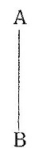

Беседа 3830 от 3877 · Беинса Дуно
Най-голямото изкуство
Упражнение за дишане с движение на ръцете.
Какво разбирате под думата „ходя”? От колко букви се състои тая дума? Напишете думите „ходя, обхода, стига и пристига.” Хората, мъже и жени, нямат еднаква обхода; те нямат и еднакви облекла. По какво се отличават мъжките дрехи от женските? Мъжете носят панталони и жилетка – дреха без ръкави. Защо някои дрехи са с ръкави, а други без ръкави? Причината е проста. Някой беден човек си шил дреха. Понеже нямал достатъчно плат, решил да си ушие дреха без ръкави. Той си казал: Важно е гърдите и гърбът да бъдат покрити. Ръцете могат да не бъдат облечени. Така се създала жилетката и разните видове салтамарки. Богатият, който разполага с много плат, туря ръкави на дрехата си. Значи, бедността създава една мода, а богатството – друга. Понякога една малка причина може да развали или да поправи работите. Например, една малка мушица разваля млякото. Казваме: Млякото се вкиснало. Също така има мисли и чувства, които се вкисват. В тях има нещо неустойчиво. Това, именно, разваля живота. Обаче, има устойчиви мисли и чувства, които не се вкисват.
Какво представя животът? – Процес на движение, в който съзнанието на човека се пробужда. Пробуди ли се съзнанието му, той казва: Аз живея. Няма по-красиво нещо от живота, но няма и по-мъчително нещо от живота. Той е едновременно и рай, и ад. Раят и адът са близо един до друг. Животът е непреривно течение на съзнанието, което минава през безброй състояния. Някой ден си весел, разположен. – Защо? – Светлината, въздухът, водата и храната ти влияят добре. Друг ден си мрачен, неразположен. – Коя е причината за това? – Една малка шушка влязла в окото ти и те дразни. Очите ти се пълнят със сълзи. Искаш да отвориш очите си, светлината те дразни. Миеш очите си с вода, и водата те дразни, Причината е малка, но произвежда голям резултат.
Като не разбират смисъла на нещата, хората бързо се произнасят и казват за някого: Лош е тоя човек. – Не се произнасяй толкова бързо. Пази чистотата си. Думата „лош” е кал, която цапа и тебе, и него. Какво ще направиш, ако ти дадат една окаляна златна монета? Ще я измиеш и, така изчистена, ще я туриш в джоба си. Лошият човек е такава златна монета. Иди на реката, измий го добре и го тури в ума си. Сам по себе си, човек е златна монета, отвън е нечиста, отвътре чиста. Грешката е в тебе, който туряш лошия човек в ума си. Не бързай. Първо го окъпи, лъсни го и тогава го тури в ума си. Знай, че съдържанието му е чисто. Отиваш на концерт, да слушаш някой виден музикант. Казваш: Не свири добре. – Бързо се произнасяш. Той свири добре, но ти не си дочул, как свири. Измий го първо и после говори. Музиката е богатство, в което няма никакъв дисонанс. Яви ли се дисонанс в музиката, причината е външна. Когато две гами не се обичат, произвеждат дисонанс.
Музиката е живо нещо. Тоновете говорят, както хората. Между тях съществуват добри и лоши отношения, които произвеждат хармонията и дисхармонията в музиката. Когато искам да разбера, как се нареждат мъчните работи, питам тона „до”, който е в гъстата материя. Когато искам да се разходя някъде, съветвам се с „ре” – тон на движението. Когато искам да зная, каква обхода да имам с някого, питам „ми” – той знае, какво да каже на всеки човек. Тонът „фа” е банкер, разполага с пари. Тонът „сол” се облича добре; той знае, как да се представи пред хората. Тонът „ла” е богат гостилничар, който услужва на хората. Питате: Де съществува тая музика? – В умствения свят на човека. Колкото и да я търсите на физичния свят, няма да я намерите.
Защо някои не успяват в училището и в живота? – Защото не пеят. Приложете музиката навсякъде в живота си, да видите, какъв резултат ще имате. Ученик си, не ти върви в математиката. Пей и свири – само така ще си помогнеш, ще решиш задачите си по-лесно. Направи следния опит: Посей няколко житни зрънца и всяка сутрин им пей. Ще видиш, какъв резултат ще имаш. Ще пееш тихо, само зрънцата да чуват и да се радват. Българинът има обичай, като посее нивата си, всяка сутрин отива да я наглежда. Обиколи нивата си, усмихне се и се върне дома си доволен. Той тихо говори на зрънцата и ги насърчава да растат. Който мине край тая нива, казва: Чудно нещо, магия ли правил Стоян, че нивата му дава толкова плод! И други селяни обикалят нивите си, по не получават много плод. Те не знаят, как да говорят. Ставаш сутрин, наблюдаваш изгрева на слънцето и се питаш: За мене ли изгрява слънцето? Ако си единственият човек в света, за тебе изгрява. Кое е по-хубаво: Слънцето да изгрява само за тебе, или за всички живи същества на земята? Същото се отнася и до музиката. Тя е за всички, не само за едного. Ако музиката е само за тебе, това е нещастие. Такава музика е в застой, както водата, затворена в шише. Това, което е дадено за всички, е извор, който постоянно блика и носи живот, идещ от Бога. Музиката, която постоянно изтича, иде от Божествения свят. Не говоря за човешката музика, но за оная музика, която прониква във всички хора и носи Божието благословение.
И тъй, дайте път на оная музика, която иде от Божествения свят. Дайте път на тоя извор да тече. Кой ще пие от тая вода? – Има кой да пие. Отвори крана да тече. – Де ще отиде тая вода? – Дето иска. Това не е твоя работа. Ти си длъжен да отвориш крана, водата да тече. Ако си вкъщи, не отваряй крана; отвориш ли го, цял ден ще тече, ще си причиниш някаква пакост. Обаче, изворът трябва постоянно да тече. Тая вода съживява и подмладява. Сегашните хора се натъкват на това, което не желаят. Искат да бъдат млади и красиви, но преждевременно остаряват. Първоначално младият се радва на живота си, но скоро остарява.
Младият ходи изправен; като остарее, прегърбва се и тръгва с бастун. И музикантът остарява и престава да свири. Докато е млад, той свири и напредва. Щом дойде старостта, и музиката престава. Старостта прави силния слаб, красивия – грозен. – Защо отслабва човек? – Защото всеки ден къса по един конец от въжето на своя живот. Колкото и да е дебело въжето, като късаш всеки ден по един конец, все ще отслабне. Млад си, но казваш: Ще остарея. Както казваш, така става. Казваш за някого: Тоя човек ще изгуби всичко. Наистина, той изгубва всичко. Казваш: Тоя човек няма да оздравее. Както казваш, така става. Това са отрицателни думи, които късат нишките на въжето. Ден след ден нишките изчезват, и въжето се скъсва. Ако си музикант или певец, не късай въжетата на хората. Има цигулари, от свиренето на които хората се разболяват. Те не са добри музиканти. Има певци и музиканти, от свиренето на които болните оздравяват, обезсърчените се насърчават. Те са добри музиканти и певци.
Да се върнем на думата „ходя”. Казваш, че ходиш. В каква посока ходиш? Ти ходиш във всички посоки: надясно, наляво, нагоре-надолу. Ходиш в горещите и в студените страни; ходиш по море и по суша; летиш и по въздуха. Птиците са знаели това изкуство преди човека. Рибите са знаели да плават във водата преди човека. 
Някой отива на Витоша и се връща недоволен. – Защо? – Не вървял според закона на ходенето. – Какво изисква тоя закон? – Доволство. Ако ходиш и не си доволен от светлината, от въздуха, от водата и от хляба, разходката ти не е направена, както трябва. Човек трябва да бъде доволен от четири неща: от светлината, въздуха, водата и хляба. Четеш една книга, но не си доволен от нея. – Защо? – Защото писателят или поетът, който писал книгата, не бил доволен от майка си, от баща си, от брата си и сестра си. Същото нещо се отнася и до музиканта и певеца. Не е музикант оня, който не знае, какво нещо е сопран, алт, тенор и бас. Това са бащата, майката, братът и сестрата. Музикантът трябва да е доволен от своите баща, майка, брат и сестра. Кое е по-добре за тебе: да се занимаваш с музика, с деца или със семена? Ако се занимаваш с музика, ще заповядваш на тоновете; ако се занимаваш с деца, ще им заповядваш, но те няма да те слушат; ако се занимаваш със семена, ще им заповядваш, и те ще те слушат.
Мнозина изпадат в положението на един от руските войници, дошли в България, след освобождението. Той се напил до забрава. За да не го хванат в пиянство, той изял две-три глави лук, да маскира миризмата на виното. Срещнал го един руски офицер и го попитал: Защо си пил? – Не съм пил. Ето, мириша на лук. За да го опита, офицерът поставил две дъски на едно мостче и му казал: По едната дъска ще минеш, а по другата ще се върнеш. Войникът се опитал да ходи по едната дъска, но не могъл, залюлявал се. Тогава той минал по двете дъски и казал на офицера: Ваше високоблагородие, аз вървя по двете дъски, за да ти докажа, че живея и за тебе, и за народа. Офицерът се засмял и си казал: Умен е тоя войник. След това му казал: Щом мислиш за мене и за народа, бъди свободен. Казвам: Престъплението не е в пиенето, но в лъжата. Защо войникът да не каже: Ваше високоблагородие, пих малко и се опих. С лука той замаскирал миризмата на виното, но престъплението с лук не се укрива. Жаждата с вино не се уталожва.
Защо духате като се изгорите? Защо туряте ръцете си на корема? Като ви заболи корем, туряте и двете си ръце върху него. Дясната ръка е положителна, а лявата – отрицателна. Енергията от едната ръка тече към другата, и болката изчезва. Колко време трябва да държиш ръцете си на корема? Определено е, колко време трябва да трае тоя опит. Ако е търпелив, човек ще държи ръцете си по-дълго време, и болката му ще мине. Разумност се иска от хората. Само разумните могат сами да си помагат. Кога изгарянето е по-голямо? – Когато въгленът е стоял дълго време на ръката. Колкото повече стои на ръката, толкова по-лошо за вас.
Природата е точна. За всяко нещо тя е определила времето. Ако пееш, трябва да знаеш, колко време да задържаш един тон. Като дишаш, трябва да знаеш, колко време да задържаш въздуха в дробовете си. Като пиеш вода, трябва да знаеш, колко вода да приемеш в стомаха си. Като се храниш, трябва да знаеш, колко храна да приемаш. Ако приемаш светлина, също ще знаеш, колко светлина ти е нужна за дадено време.
Сегашните хора страдат от недоимък на нещата. Те сами поставят препятствия на пътя си, поради което не възприемат нужното количество светлина, въздух, вода и храна. Природата е дала всичко в изобилие. Обаче, някои хора не могат да се ползват правилно от благата на природата. Те пият студена вода зимно време и се чудят, защо боледуват. – Да не пием ли зимно време вода? – Пийте, но тя трябва да запази тая топлина, каквато имала в земята. Щом се изстуди, ще я стоплите. Външната температура отнема част от топлината на водата.
Пази следните правила: Зимно време не пий студена вода! Не пей в студена стая! Когато не си разположен, не пей. Не пей и пред хора, които не обичат музика. Ако искаш да пееш, пей тихо, само за себе си. В това се крие благото на човека.
Казвам: Като се стреми към блага, човек трябва да знае, какво отношение имат те към него. Благата имат отношение към духа, душата, ума и сърцето на човека. Като благо, и музиката има отношение към духа, душата, ума и сърцето на човека. Няма ли това отношение към него, тя остава неразбрана. Ако музиката не може да въздейства на човешкия ум, сърце, душа и дух, не е истинска музика. Каква музика е тая, която не раздвижва човека? Какво прави плувецът във водата? – Движи ръцете и краката си. Има плувци, които не се движат, но те са големи майстори. Обикновеният плувец движи ръцете и краката си, с тях дава тласък на тялото си да пори водата. За да плуваш свободно, не трябва да бъдеш страхлив. Страхът намалява обема на тялото, и човек потъва. Страхът е чувство, което стеснява ума и сърцето. Носиш шише с масло. Страх те е да не се пукне шишето. Носиш чувал с жито. Страх те е да не се скъса чувала, да се разсипе житото. Докато държиш страха вън от себе си, той е на място. Щом го пуснеш вътре, той не е на мястото си. Външният страх се превръща в благоразумие. Вътрешният страх ограничава човека. Казано е в Писанието: „Страхливият няма да наследи Царството Божие”.
Като ученици, вие трябва да имате обхода помежду си. Обходата се дължи на хармония между ума и сърцето. Умът носи светлина, а сърцето – топлина. Не можеш да пееш без светлина и топлина. И във физично отношение е същото. Салонът, в който пееш, трябва да бъде осветен и отоплен. Следователно, ако искаш нещо от Бога, салонът ти трябва да бъде осветен и отоплен. Иначе, и да получиш нещо, няма да го използваш. Пей и свири на светло и на топло, за да придобиеш нещо.
Падаревски, знаменит полски пианист, отишъл в един град на Южна Америка да даде концерт. Жителите на тоя град били испанци. Когато свирил, те се разговаряли помежду си. Падаревски дал един концерт, но повече не пожелал да остане в тоя град. Като го запитали, защо не даде още един концерт, той отговорил: Не мога да свиря на хора, които вместо да слушат, се разговарят. И вие, като тия испанци, искате Бог да ви говори, но същевременно и вие говорите. Невъзможно е двама души едновременно да говорят: единият ще говори, другият ще мълчи. Падаревски ще свири, а публиката ще слуша. Ако тя говори, никакъв концерт няма да чуе. Жителите на тоя град били засегнати от отказа на Падаревски и, за да не се препоръчат зле пред другите градове на Южна Америка, те решили да се въздържат. Поканили още един път Падаревски да даде концерт, като обещали, че ще мълчат и слушат. Той се съгласил, дал втория си концерт, от който сам останал доволен. Публиката слушала с голямо внимание – никакъв глас не се чул.
Казвам: Работете върху себе си, да утихне брожението във вас. Не се страхувайте от нищо. Когато някой виден музикант дава своя концерт, ще мълчиш и ще слушаш. Когато Господ говори, ще мълчиш и ще слушаш. Вътрешното брожение в нас трябва да утихне! Когато Господ говори, земята трябва да мълчи. – Какво ще стане с нас? – Не се безпокойте. С вас ще стане това, което е станало с всички. – Ще обеднеем ли? – Кой не е обеднявал? Кой не е боледувал? Всичко, от което те е страх, ще дойде до главата ти. Ако не те е страх, ще се махнат всички противоречия. Човек страда по единствената причина, че не знае как да пее, да свири и да живее. Ще кажеш, че плащаш да ти свирят. – Това благо иде отвън. Важно е благото да излезе от тебе. Слънцето дава изобилно блага, но никой не може да го подкупи.
Пазете се от старите навици. Старото трябва да се преработи. То е капиталът, даден на човека от незапомнени времена. Гласът е даден на човека, но той трябва да го обработи. Той трябва да разбира отношението между тоновете, както между мислите и чувствата. Знаете ли какво влияние упражнява една мисъл, едно чувство или една постъпка върху човека? Някога човек се стеснява или разширява повече, отколкото трябва. Някога е по-активен, отколкото трябва. Това са противоречия, които го спъват. В песента „Вечер-сутрин” има едно противоречие. Тя започва с думата „вечер”, а не със сутрин. Това е привидно противоречие. Правилно е да бъде „Вечер-сутрин”. – Защо? – Защото е правилно да започнеш с болестта, за да дойде здравето. Ако започнеш със сутринта, т. е. със здравето, ще дойде вечерта – болестта. Започвай с неблагоприятните условия, за да свършиш с благоприятните.
Изпейте песента „Вечер-сутрин”. Както я пеете, вие ще накарате злото да си върви. Виждайте хубавото в светлината, приятното във въздуха, красивото във водата и доброто в живота. Както в природата се явяват течения, които разрушават брегове, отнасят дървета, камъни, пясък, така и в живота има течения, които отнасят дървета, камъни, пясък, пръст. Какво трябва да се прави с тия наноси? – Да се посаждат с дървета, да задържат почвата. Всички трябва да работим, да подобрим условията си.
Като пеете песента „Тъги, скърби”, трябва да се пее отсечено, с определен ритъм. Във всяко нещо има ритъм, който трябва да се спазва. И в болестта, и в тъгата има ритъм. Ако спазиш ритъма им, те стават разбрани и тогава, нито болестта е болест, нито тъгата – тъга. Всички разбрани неща са приятни. Когато разбереш живота, и той става приятен и красив.
И тъй, най-голямото изкуство е да живееш добре. И музиката, и поезията допринасят нещо към живота. Приятно е да чуваш хубаво пеене, да слушаш права мисъл, да изпитваш красиви чувства. Като мисли, човек трябва да има достатъчно светлина; като чувствува, трябва да има достатъчно топлина и като действува – достатъчно сила. Ако няма достатъчно светлина, той няма да вижда ясно; без топлина ще среща големи препятствия; без сила работите му ще остават незавършени. Всяка незавършена работа е лоша. Стремете се към повече светлина, топлина и сила, да завършите работите си, да ги направите добре.
Казвате: Трябва да се живее добре. – Лесно се говори, мъчно се изпълнява. – Да живееш добре, това значи, да изучаваш живота като изкуство. Ако Бог не взима участие в нашия живот, нищо няма да излезе. Ако слънцето и земята не взимат участие в нашия живот, нищо няма да излезе. Във всичко, в което Бог взима участие, и ние трябва да участваме. Там, дето Бог не взима участие, и ние не трябва да участваме. Да използуваме всичко, което е вложено в нас. Какво правят адептите? Има адепти, които прекарват дневно със сто грама ориз. Те дъвчат храната си добре и използуват напълно хранителността й. Обикновените хора бързо ядат, не дъвчат храната си добре и благодарение на това, приемат много храна, а малко се ползват от нея. Не е лошо да бърза човек, но той трябва да знае, кога да бърза и кога да не бърза. Когато тренът наближава към някоя гара, забавя движението си; когато излиза от гарата, постепенно ускорява движението си. И светлината, като влиза в човешкия ум, намалява своята скорост. За да влезе в сърцето на човека, светлинната енергия се превръща в топлина. За да влезе във волята му, тя се превръща в сила.
Сега, като се говори за музикалните тонове, трябва да знаете, че всеки тон има седем качества. Например, тонът „до” също има седем качества. Онова качество, което се проявява в даден момент, взима надмощие, а останалите шест се проявяват слабо, почти незабелязано. Те държат исо на главното, проявено вече, качество. Доминиращото качество на тона се изявява, както солистът в някой оркестър. Когато едно от качествата на тона взима първенство, останалите само го пригласят. Изобщо, силно качество е онова, на което даваш израз. Другите качества са спомагателни средства. Ако искаш да изпееш думите „отивам на училище да уча”, ще започнеш от тона „ми”, който означава обхода. За да отидеш на училище, трябва да имаш обхода, да знаеш, на кой чин да седнеш, между кои деца и т. н.
И тъй, като говоря за тоновете, виждам, че не ги разбирате и мъчно може да се справите с тоя предмет. Не е лесно да различите естествения скъпоценен камък от изкуствения; не е лесно да различите диаманта от изкуствените камъни. Без да гледате, не можете да различите златото от желязото. Ако вземете в ръката си еднакво големи парчета желязо и злато, ще ги различите по теглото им: златото е по-тежко от желязото. Освен това, желязото се окислява, а златото не се окислява. Желязото прави човека енергичен, а златото – благороден. Следователно, ако искаш да предадеш на организма си добри качества, храни се с добра храна. Храни се с възвишените качества на светлината и топлината. Храни се с възвишените качества на въздуха, водата и хляба. Това значи, да живееш добре със своите приятели. Четири приятели има човек: светлината, въздухът, водата и храната.
Помни: Дръж връзка с духовете на светлината, които имат отношение към умствения свят. Дръж връзка с добрите духове на въздуха, т. е. с диханието на Бога. Дръж връзка с добрите духове на водата и на хляба, от които идат благата на живота. Ако грешиш, причината е в тебе. Светлината, въздухът, водата и храната никога не грешат.
Радвайте се на благата, които сте получили от миналите поколения. Проверявайте това, което сте получили наготово, за да отстраните непотребното. Всичко, което е Божествено, приемайте без критика. Дойдете ли до човешкото, там критиката е на място. Божественото обновява, а човешкото състарява. Да се обновиш, това значи, всеки ден да приемаш по една светла мисъл и по едно възвишено чувство; всеки ден да проявяваш по една благородна постъпка. Не приемеш ли поне една светла мисъл, едно възвишено чувство и една благородна постъпка, ти спираш процеса на своето обновяване.
Само светлият път на мъдростта води към истината.
В истината е скрит животът.
Лекция от Учителя, държана на 3 декември, 1943 г. София – Изгрев.